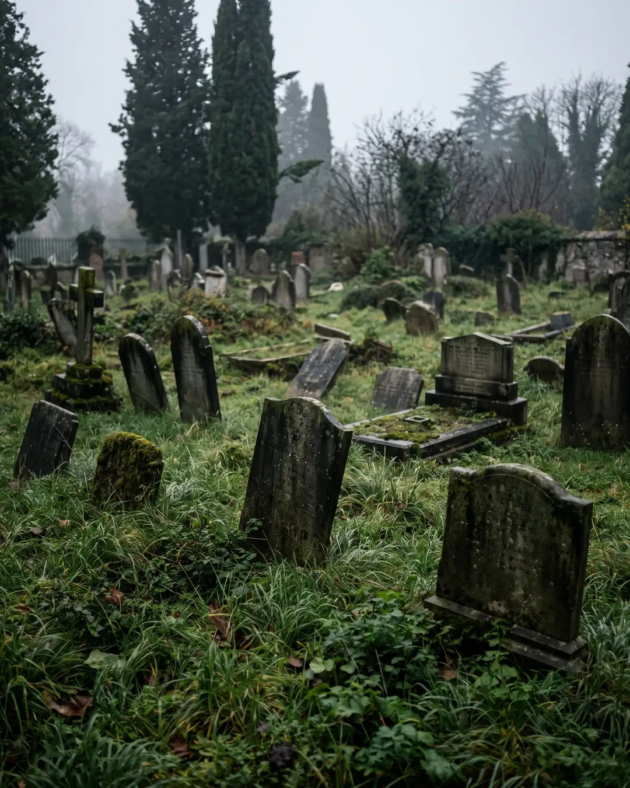
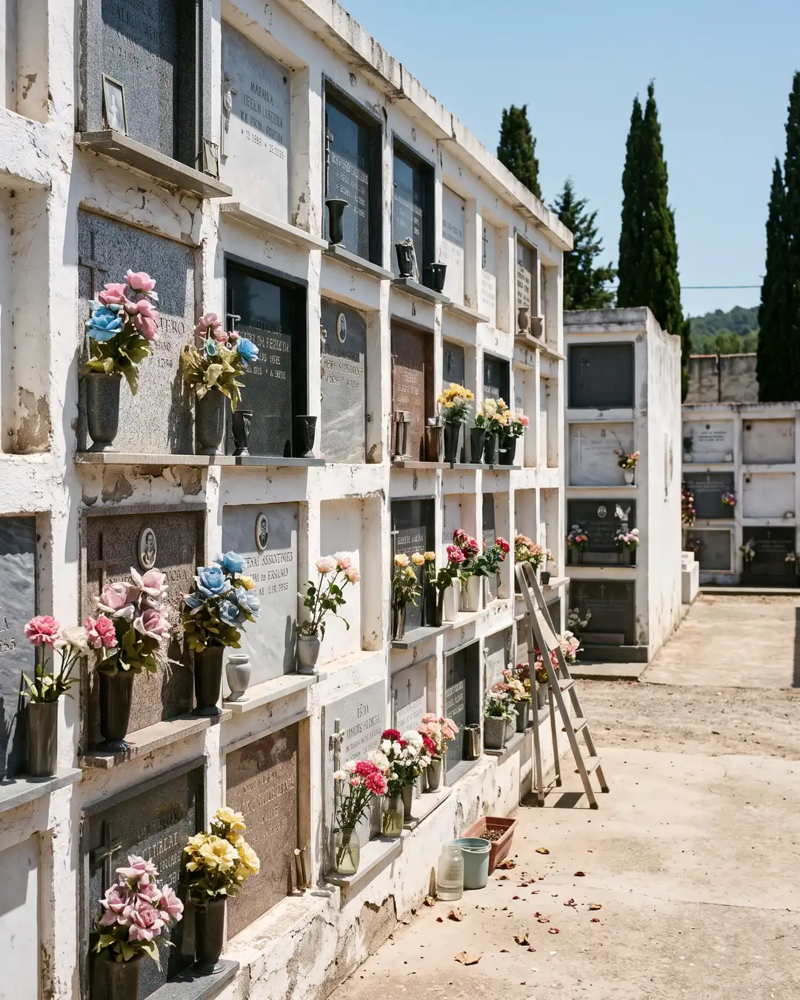
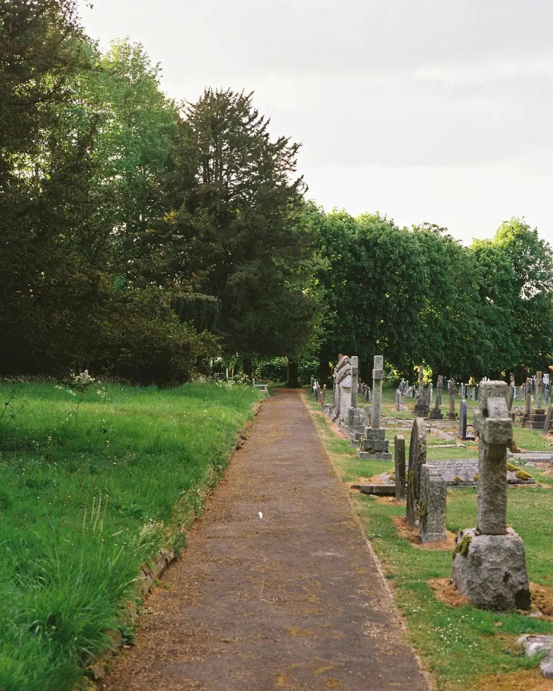

Case #25 · Cemeteries
About this case
Case #25 is closed. It was the daily case for November 25, 2026 and its theme was Cemeteries. The detectives of that day had two challenges: five images to judge as real photographs or AI-made pictures, and five one-sentence claims to judge as facts or fakes.
- AI-generated images: 3 of 5
- Fake claims: 2 of 5
Below you will find every answer. Each AI-generated image comes with the prompt that produced it, and each claim with the truth behind it and the details worth remembering, so you can check what you missed.
One of the fakes: “The hair and nails of the dead keep growing for weeks inside the coffin.” The truth: Growth needs new cells, which stop forming at death; the skin dehydrates and retracts, exposing more nail and hair follicle.
Want to sharpen your eye? Read our guide to spotting AI images or our guide to spotting fake news, then play today's case.
Images
-
Image 1

AI
The suspect's confession
An old cemetery with tilted, moss-covered stone gravestones among tall grass, with cypress trees in the background; cloudy day with some fog and muted colors.
-
Image 2
REAL
Real photograph
-
Image 3
AI
The suspect's confession
A weathered stone angel on an old mausoleum, with lichen stains and a crack in the wing; 100 mm telephoto lens, blurred background of trees and side afternoon light.
-
Image 4

AI
The suspect's confession
A village cemetery with whitewashed niches on several levels, faded plastic flowers and some fresh ones in the vases; harsh midday light, 35 mm at f/8 and illegible inscriptions.
-
Image 5

REAL
Real photograph
Fact or Fake
-
Claim 1
FACT “There is a city in California where the dead outnumber the living 1,000 to 1.”
It is Colma, near San Francisco, with about 1,500 living residents and more than 1.5 million people buried.
- Founded in 1924, it is known as the "City of Souls".
- San Francisco banned cemeteries within its limits in the early 1900s.
-
Claim 2
FACT “In a municipality in the Philippines, coffins are not buried but nailed and hung on cliff walls.”
In Sagada, the Igorot people have hung carved wooden coffins on limestone cliffs for more than two thousand years.
- They believe it brings souls closer to ancestral spirits.
- It also keeps the bodies safe from scavengers.
-
Claim 3
FACT “The Paris Catacombs exist because, under pressure, many corpses came to the surface.”
In 1780 a wall of the overcrowded Holy Innocents cemetery burst; over six million skeletons were later moved to old mines.
-
Claim 4
FAKE “The hair and nails of the dead keep growing for weeks inside the coffin.”
Growth needs new cells, which stop forming at death; the skin dehydrates and retracts, exposing more nail and hair follicle.
-
Claim 5
FAKE “Since 2022, Switzerland has charged an extra tax for burying a dead person horizontally instead of vertically.”
No such law or tax exists in Switzerland.
- Experimental funeral firms in Australia have proposed vertical burials.